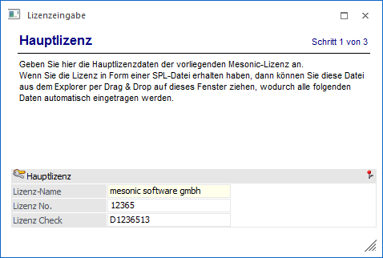
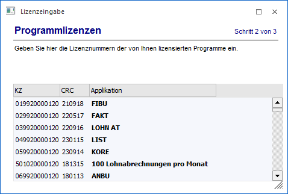
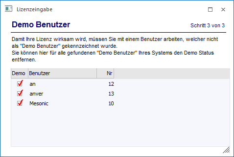
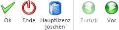

Im Menüpunkt…
1 Datei
1 Lizenz eingeben
… können Sie Ihre Programmberechtigung (Lizenz) eingeben. Achten Sie in der Folge darauf, dass alle Werte gemäß der ausgestellten Lizenz eingegeben werden inklusive Groß- und Kleinschreibung.
Die Lizenzeingabe selber ist dabei in 3 Schritte unterteilt:
Schritt 1
Im 1. Schritt wird die Hauptlizenz in die Felder "Lizenz-Name", "Lizenz No." und "Lizenz Check" eingetragen.
Hinweis
Wenn die Lizenz als SPL-Datei (mesonic-SpoolView-Format) vorliegt, dann kann die Lizenz mit "Drag & Drop" in dieses Fenster übernommen werden. Dadurch werden alle Eingaben (unter "Hauptlizenz" und "Programmlizenz") automatisch gefüllt. Das funktioniert aber nicht, wenn das Programm WinLine ADMIN als Administrator gestartet wurde - dann gelten besondere Berechtigungsregeln, die ein Drag&Drop nicht zulassen.
Durch Anklicken des Buttons "Hauptlizenz löschen" kann eine bestehende Lizenz gelöscht werden.

Wurde die Hauptlizenz eingetragen, kann durch Anklicken des "Vor"-Buttons der nächste Schritt angewählt werden.
Schritt 2
Im 2. Schritt werden die einzelnen Kennzeichen und CRC-Checks für die lizenzierten Programme eingegeben, wobei das Feld "Applikation" aufgrund der "KZ"- und "CRC"-Eingabe automatisch gefüllt wird.

Hinweis
Wurde im 1. Schritt die Lizenz mit "Drag & Drop" übernommen, werden an dieser Stelle bereits alle auf der Lizenz angeführten Programme angezeigt.
Nach der Eingabe der Programmlizenzen kann durch Anwahl des "Vor"-Buttons in den 3. Schritt gewechselt werden. Über den Button "Zurück" wird wieder der Schritt 1 (Hauptlizenz) aufgerufen.
Schritt 3
Im 3. Schritt werden alle Benutzer angezeigt, bei denen die Option "Demo Benutzer" aktiviert ist. Hier besteht nun die Möglichkeit, diese Demobenutzer zu "echten" Benutzern umzuwandeln (erst so wird die Lizenz für die jeweiligen Benutzer verwendet).

Ø Demo
Über das Deaktivieren der Option "Demo" kann ein Benutzer im Zuge der Lizenzeingabe von einem Demobenutzer zu einem "echten" Benutzer umgewandelt werden. Nur solche "echten" Benutzer verwenden die erfasste Lizenz und arbeiten nicht im "eingeschränkten" Demomodus.
Hinweis
Die Option "Demo Benutzer" kann auch über den Menüpunkt
1 Benutzer
1 Benutzeranlage
zu einem späteren Zeitpunkt geändert werden (nähere Informationen entnehmen Sie bitte dem Kapitel Benutzeranlage).
Durch Anwahl des "Zurück"-Buttons können die vorherigen Eingaben nochmals überarbeitet werden.
Was muss ich tun, wenn...
ü … die Meldung "Lizenz abgelaufen"
angezeigt wird, obwohl die Lizenz eingegeben wurde?
Der angemeldete Benutzer
hat immer noch den Status eines Demo Benutzers. Ist dies der Fall, darf er zwar
alle Programme aufrufen, es wird aber der Erstaufruf des Programms
abgeprüft.
Lösung
Dem Benutzer muss der Demo-Status entzogen werden, indem die Checkbox "Demo Benutzer" im Programm WinLine ADMIN im Programmpunkt Benutzer/Benutzeranlage deaktiviert wird. Dieser Vorgang sollte aber mit einem anderen Administrator-Kennwort durchgeführt werden.
ü … nach einem Update ein neu
dazugekommenes Fenster nicht bearbeitet werden kann, weil alles gegrayed
ist?
Das Fenster ist zwar vorhanden und ist Lizenzrechtlich dürfte es auch
verwendet werden, trotzdem ist alles grau und es kann keine Eingabe durchgeführt
werden.
Lösung
Wenn ein neues Fenster hinzugekommen ist, hat es noch keine Lizenz hinterlegt. Daher kann das Programm nicht wissen, ob die Lizenz zur Bearbeitung des Fensters berechtigt oder nicht. In diesem Fall muss die Lizenz neu bestätigt werden - danach kann das Fenster bearbeitet werden.
Buttons

Ø Ok
Wenn alle vorhandenen Lizenzinformationen eingegeben wurden, müssen diese durch Drücken der F5-Taste oder durch Anklicken des "OK"-Buttons gespeichert werden. Dadurch wird die Lizenz in die System-Datenbank zurückgeschrieben. Die im Netzwerk befindlichen Workstations bekommen anschließend eine Meldung, dass die Lizenz geändert wurde und dass diese Änderung beim nächsten Neustart des Programms übernommen wird.
Achtung
Die Lizenz hat nur auf "echte" Benutzer (dieses sind alle Benutzer, bei denen die Checkbox "Demo Benutzer" deaktiviert ist) Auswirkungen.
Ø Hauptlizenz löschen
Durch Anwahl dieses Buttons wird die aktuell eingespielte Lizenz aus der System-Datenbank gelöscht.
Ø Zurück / Vor
Mit Hilfe der Buttons "Zurück" bzw. "Vor" kann zwischen den einzelnen Schritten der Lizenzeingabe gewechselt werden.